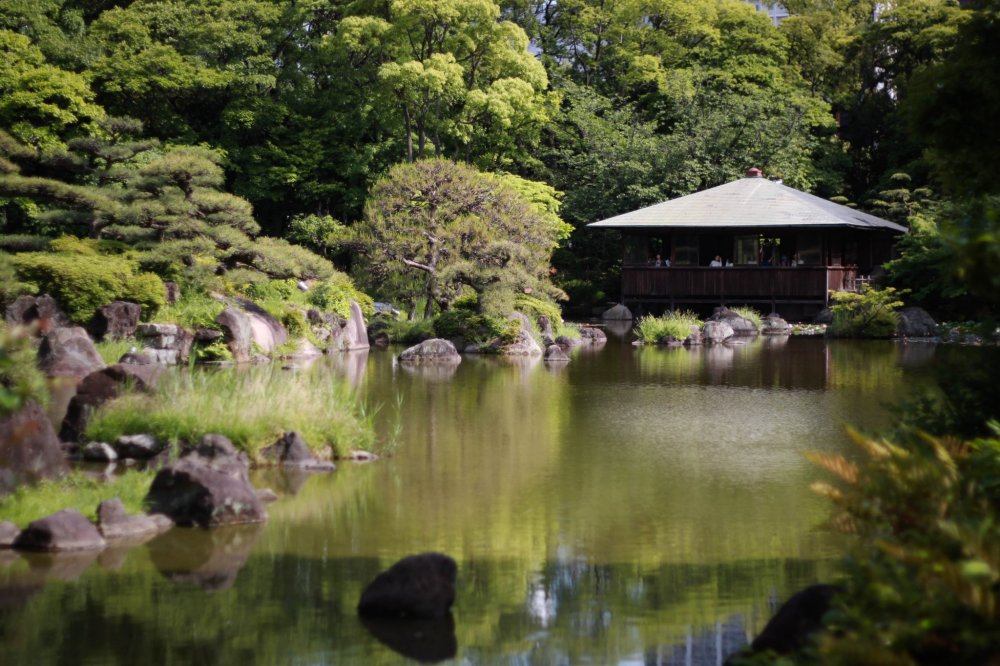
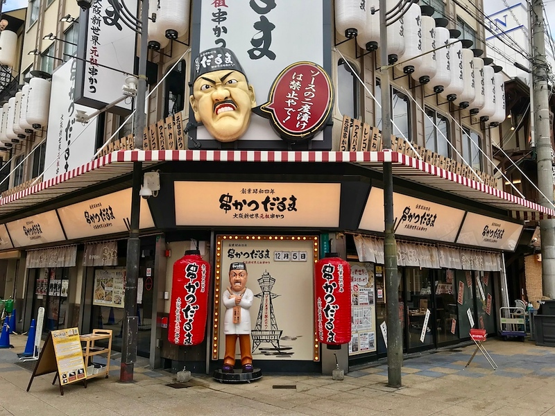
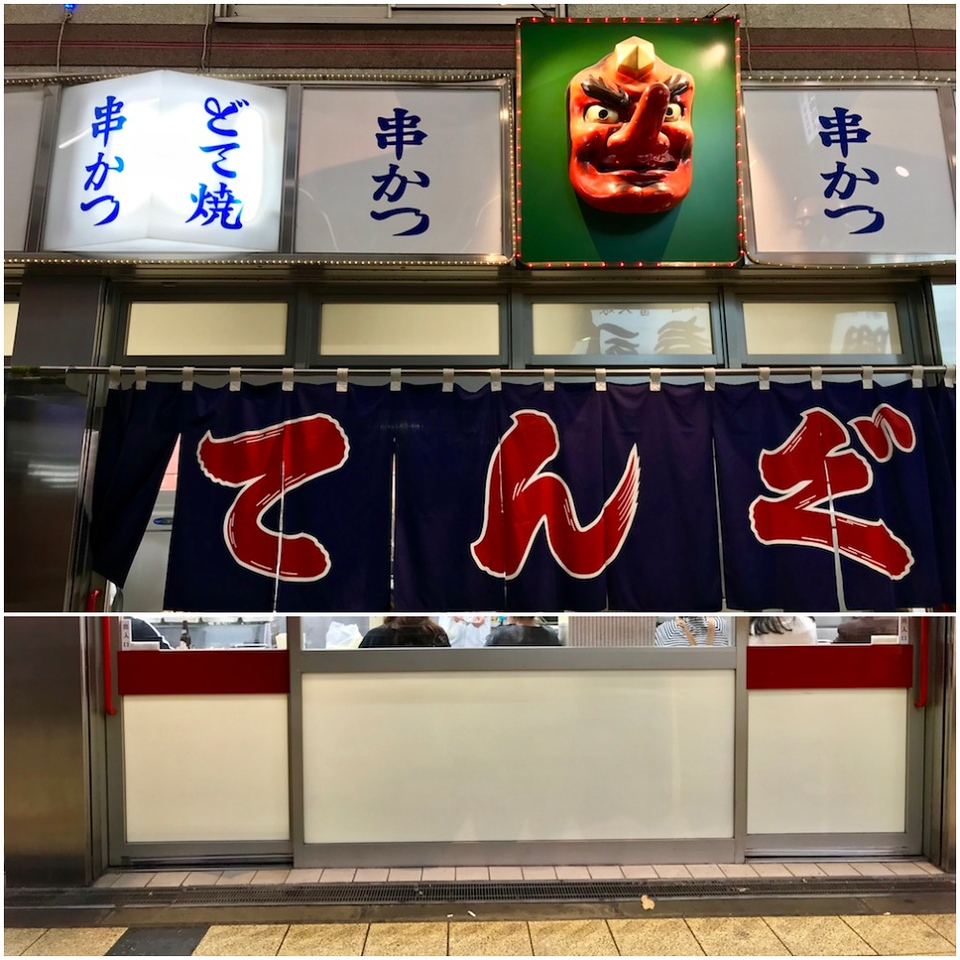

Tennoji
Tourist Spot

Stroll Around Shinsekai
While visiting Tsutenkaku Tower, we suggest taking a walk around Shinsekai. Discover great souvenirs and try local food at the shops lining the streets while enjoying the energetic local atmosphere.

When trying to describe the distinctive atmosphere of Osaka in Japanese, many people use the term “kote kote,” which roughly means "energetic, chaotic." Shinsekai is overflowing with this energy and is the perfect area to describe as kote kote.
Around the entrance to the Shinseikai area is a narrow street called Janjan Alley (Janjan Yokocho in Japanese). It is lined with shops selling kushikatsu (deep-fried skewers of meat or vegetables) and izakayas, or Japanese pubs.
Games including go and shogi have been also quite popular in this area for many years. Even today, you can see people playing shogi through the house and store windows.
Stroll Around Tennoji Park
East of the Tsutenkaku Tower lies Tennoji Park, where visitors can take a break in the heart of nature.
The nearby areas around Shin Imamiya Station and Dobutsuen Mae Station have seen more backpackers and tourists recently, leading to a rapid increase in the number of affordable accommodations. This makes it a great place to stay, as well as a suitable starting point for sightseeing in Osaka.
Please note that the area is considered slightly unsafe and shady by the locals so be careful when walking around at night.
Food

Kushikatsu Daruma
Located near the base of Tsutenkaku tower in Shinsekai, Daruma is one of the area’s most popular kushikatsu restaurants. If it’s deliciously greasy, deep-fried meat and veg you’re looking for, your search ends here. Look for the large black and white sign.
Do you like deep-fried, battered food? Do you like skewers? Then you’ll love kushikatsu. Invented as cheap fast food for lower-income workers around the Shinsekai area in the early 20th century, kushikatsu restaurants are popular today with diners of all economic stripes, and for good reason - kushikatsu is just delicious and fun to eat.
Daruma is one of the area’s most popular restaurants in this genre, with several branches across the city. Anything can be made into kushikatsu, from vegetables to questionable meat parts to cheese. Even fruit can be battered and deep-fried. Everything is fried to order, and the panko breadcrumb batter is light and crispy when hot and fresh out of the kitchen. Try the 16-skewer set and let the kitchen surprise you with their choice of ingredients!
Kushikatsu Daruma Address:
2-3-9 Ebisu-higashi, Naniwa-ku, Osaka-shi, 556-0002
Tengu
Can’t be bothered to queue at Daruma? Don’t worry - there’s another kushikatsu restaurant in Shinsekai that’s just as good, if not better. Tengu is sure to satisfy all your greasy, deep-fried desires. Just be warned, sometimes there’s a queue here, too.
Tengu stands out in the narrow Jan Jan Arcade for the long, red-nosed demon above its door for which it’s named. It’s one of many kushikatsu restaurants in the Shinsekai area. Not all kushikatsu are created equal, however. The queues outside Tengu at peak dining hours are testament to the consistent quality of its deep-fried skewers.
Like most kushikatsu restaurants, the skewers here won’t break the bank. Most vegetables and meats cost around JPY100 - 200 per skewer. An outlier is the fried shrimp at around JPY450 - but given how large and sweet it is, we think it’s entirely worth the extra expense. Another one to try is the doteyaki - beef tendons stewed in a sweet miso sauce. This local speciality is an acquired taste but one you should definitely try at least once when you’re traveling through Osaka.
Tengu Address:
3-4-12 Ebisu-higashi, Naniwa-ku, Osaka-shi, 556-0002